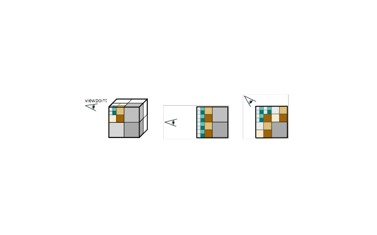
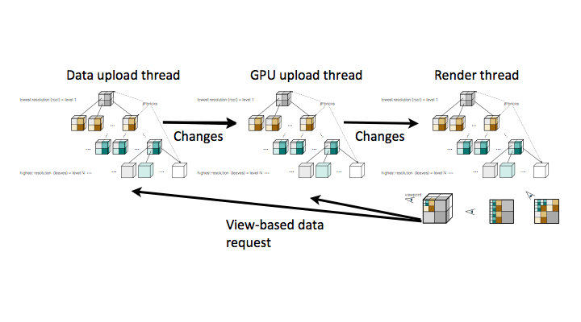

Table of Contents
- Technical Features
- Architecture
- Render thread
- GPU upload thread
- Data thread
- Livre library
- References
Technical Features
The Livre is an out-of-core rendering engine that has the following features:
- Distributed rendering using Equalizer library ( https://github.com/Eyescale/Equalizer ) ( Sort-first is implemented, sort-last is in progress )
- Lock-free data sharing using DASH library (https://github.com/BlueBrain/dash)
- Octree based out-of-core rendering. – Visualisation of pre-processed UVF format ( source code ) volume data sets. – Real-time voxelisation and visualisation of surface meshes using OpenGL 4.2 extensions. – Real-time voxelisation and visualisation of blue brain morphologies. – Real-time voxelisation and visualisation of local-field potentials in BBP circuit. – Multi-node, multi-gpu rendering ( Currently only sort-first rendering )
- Error based LOD selection and rendering quality.

View-based LOD selection [2]
- Single-pass GPU Raycasting.
Architecture
The architecture can be summarized with the picture below:

For each thread, DASH library provides different views of data. And, because of its tree structure, the volume octree can be represented using the DASH tree. The changes are then propagated between threads.
Render thread
- Computing the LOD tree according to the viewpoint and sending the request to other threads for the required nodes.
- Rendering the scene with the retrieved/available data.
GPU upload thread
- Uploading the data to the GPU, and modifying the tree.
- Sending results to rendering thread.
- Maintaining the GPU cache.
Data thread
- Uploading the data to CPU memory from disk/network etc and modifying the tree.
- Sending results to the GPU thread.
- Mainitaining the main memory cache.
Livre library
Livre is composed of 6 main libraries:
- core : Collection of base classes for Cache, Dash based pipeline, Visitors and Rendering.
- Lib : Collection of implementations of classes for Cache such as "Data Cache", "Texture Cache" and Rendering.
- Eq : Collection of implementations of classes for Equalizer classes.
- bbpsdkvox : Collection of implementations of classes for morphology voxelization.
- fivox : Collection of implementations of classes for local-field potential voxelisation and visualization.
- meshvox : Collection of implementations of classes for mesh voxelisation and visualization.
And, additionally, there is the UVF library for supporting pre-processed UVF volume data sets.
References
- Fogal, Thomas, and Jens Krüger. "Tuvok, an Architecture for Large Scale Volume Rendering." VMV. 2010.
- Suter, Susanne K., et al. "Interactive multiscale tensor reconstruction for multiresolution
volume visualization." Visualization and Computer Graphics, IEEE Transactions on 17.12 (2011): 2135-2143.
 1.8.9.1
1.8.9.1